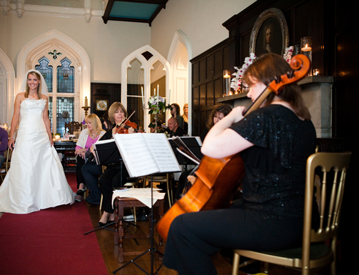

The Greenwich String Quartet
Wonderful Music For Your Wedding Day
"Thank you for all the wonderful music you played. You made the day extra special. So many people said how nice it was and how it went very well with the venue."
"Thanks for doing such a great job peforming at our wedding."
Create a perfect atmosphere for your Wedding Day with beautiful music played by the Greenwich String Quartet. Walk down the aisle to your own special piece; create a wonderful ambience as your guests gather and await the bride's arrival; entertain your guests throughout the day during canapes, drinks and the wedding breakfast. The quartet has an extensive repertoire, ranging from classical to jazz, light, show/film, latin and pop. Something for everyone !

Photo credit: David Baird
"Your performance was perfectly brilliant and so appreciated by us and all of our guests throughout the day."
"Your performance was fantastic and was the icing on the cake to make our ceremony perfect!"
Before the ceremony commences, we usually play for fifteen minutes or half an hour as the guests arrive. Our repertoire includes Bach's Air in D and Brandenburg Concerto no.3, Handel's Hornpipe from the Water Music Suite and Mozart's Divertimenti and Eine Kleine Nachtmusik. For the bride's processional we are often requested to play Pachelbel's Canon, Handel's Arrival of the Queen of Sheba or Wagner's Bridal Chorus. During the signing of the register the quartet can play one or two short pieces, and finally, Mendelssohn's Wedding March is a much requested piece for the recessional. Of course, these are suggestions only!

We can continue on to the drinks reception and/or the wedding breakfast. In the summer, if drinks are served outdoors we are happy to play, as long as we have adequate shade to protect the instruments. We will also include, if you wish, jazz, pop and show numbers as well as our classical repertoire. Please see our repertoire page for a full list.
If you wish to book the quartet only for your ceremony, reception or meal we will accommodate any requirements you may have.